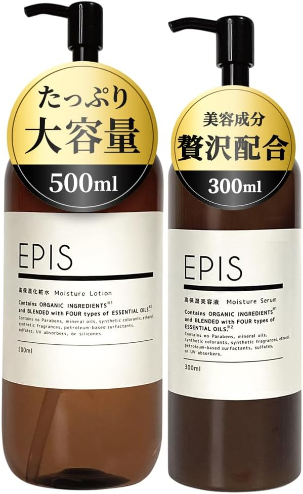
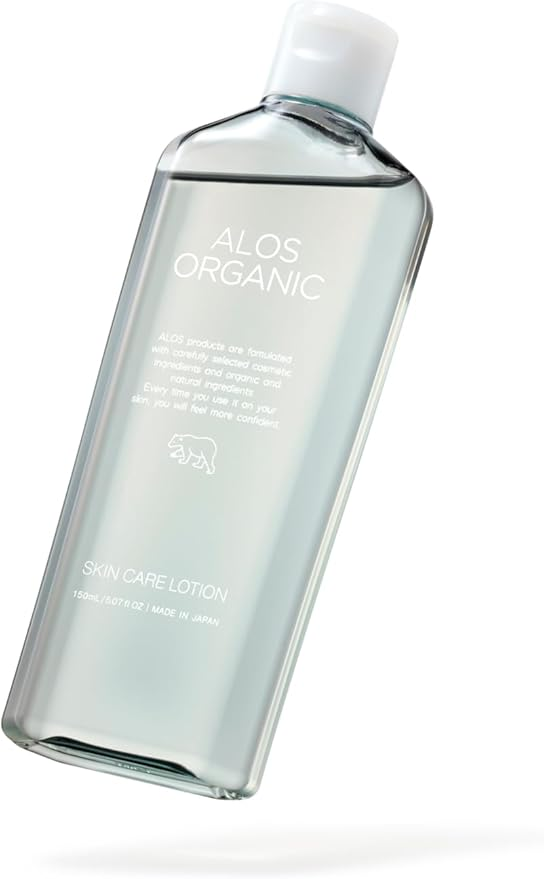
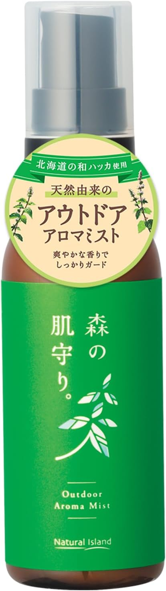
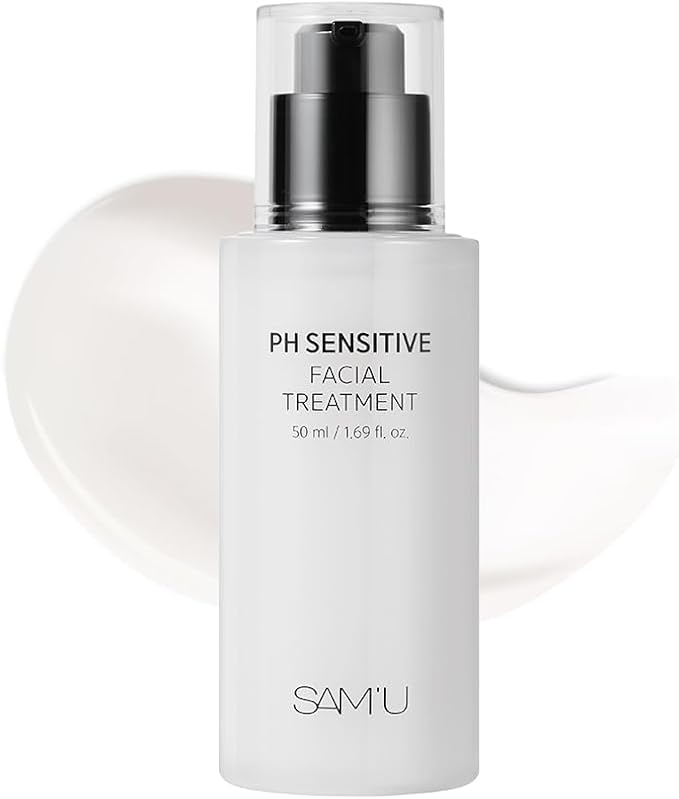

🕊 ナチュラル派・家族重視（ゆったり生活）
エピス EPIS 化粧水＆美容液（大容量セット）
家族みんなで使える大容量のオーガニックスキンケアセット。ナチュラルシトラスの香りで心地よく、無添加処方で敏感肌にも配慮されています。
- 家族で使える大容量セット
- 無添加・植物エキス配合で高保湿
- ギフトにもおすすめ

「コスパがよくて家でたっぷり使えます。敏感な肌でも刺激が少なかったです。」
ゆうなさん：20代 学生

「朝晩たっぷり使っても減りにくいので助かります。香りも優しく家族で使っています。」
わかなさん：40代 在宅ワーク
⏱ 忙しい日常・時短ケア（ワーキングライフ）
高保湿・高浸透 化粧水（敏感肌向け）
忙しくても素早く保湿ケアできる高保湿化粧水。べたつかず浸透力が高く、オレンジの香りでリラックス効果も。
- 高保湿・高浸透でベタつかない
- 敏感肌に配慮した処方
- さっと使える時短アイテム

「忙しい朝でもさっと使えて保湿力バッチリ。香りも気に入っています。」
せりなさん：30代 主婦

「仕事で時間がない日でもケアが続けられる。肌荒れが落ち着きました。」
まきさん：30代 引っ越し業
🏞 アクティブ・アウトドア（外出・運動が多い）
ナチュラルアイランド 森の肌守り（アロマミスト）
北海道産の和ハッカをはじめ9種の天然精油をブレンドしたアロマミスト。外出やスポーツの際の肌ケアにぴったり。
- 天然由来の虫よけ＆アロマウォーター
- ディート不使用・無添加処方
- 持ち運びしやすいサイズ

「匂いが爽やかで自然。外遊びのときに安心して使えます。」
みほさん：30代 会社員

「海やアウトドアで活躍。肌に直接つけても安心感がありました。」
さくらさん：30代 ダイバー
🌙 夜型・不規則生活（夜勤／睡眠不足）
夜は一日の疲れを癒し、肌を集中ケアする絶好の時間です。メイクや皮脂汚れをしっかり落とした後、肌が最も吸収しやすいタイミングに美容液やクリームで栄養を届けることで、翌朝の肌の調子が大きく変わります。特に乾燥が気になる方は、保湿力の高いクリームやナイトパックを使うのがおすすめです。さらに、オーガニックやナチュラル成分にこだわることで、敏感肌の方でも負担を抑えながら心地よくケアを続けられます。
サミュ（SAMU） ナイトケア美容液
夜遅くまで働く方や睡眠のリズムが不規則な方に。セラミド・ナイアシンアミド・アデノシン配合で、眠っている間に集中保湿とハリケアを行います。
- セラミドで高保湿、ハリサポート
- ナイアシンアミド・アデノシンでトーンアップ
- 寝ている間の集中ケアに最適

「夜のスキンケアに取り入れてから朝の肌が柔らかく感じます。」
あきこさん：50代 主婦

「ハリ感が出てメイクのりが良くなりました。疲れた肌にもおすすめです。」
めいさん：40代 自営業
朝と夜の役割を意識し、生活リズムに合ったアイテムを選ぶことで、無理なく続けられるスキンケア習慣が身につきます。毎日の小さな積み重ねが、長期的な美肌づくりにつながるのです。
生活スタイルに合ったスキンケアを取り入れることで、肌トラブルを防ぎつつ、心地よい毎日を過ごせます。朝晩の習慣、週末のスペシャルケアなど、自分に合ったリズムでケアを楽しむことが大切です。家族と一緒に使えるアイテムや持ち運びしやすい商品を選ぶと、忙しい日常でも続けやすく、自然由来成分で肌にも優しいケアが可能です。
⬆ ページトップへ